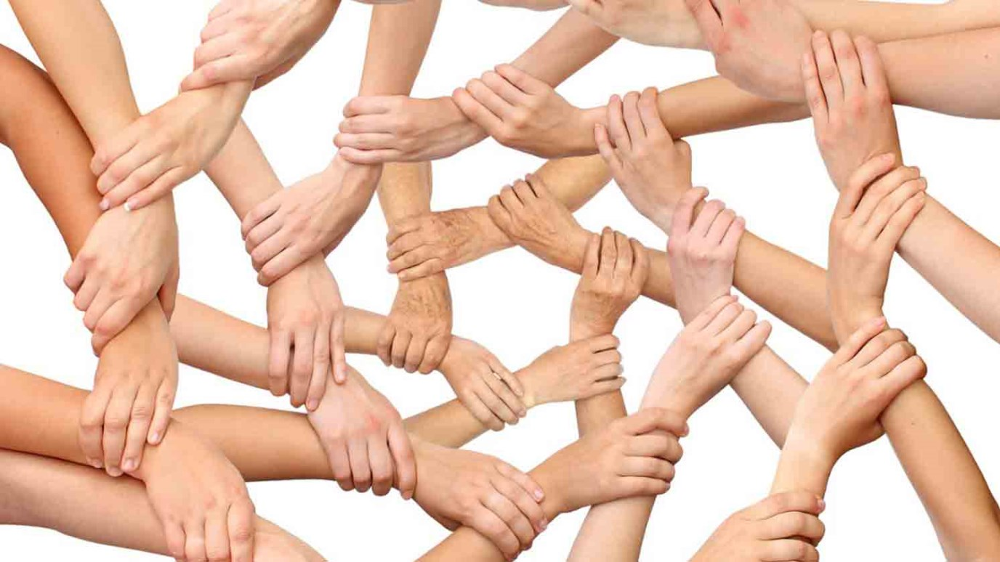
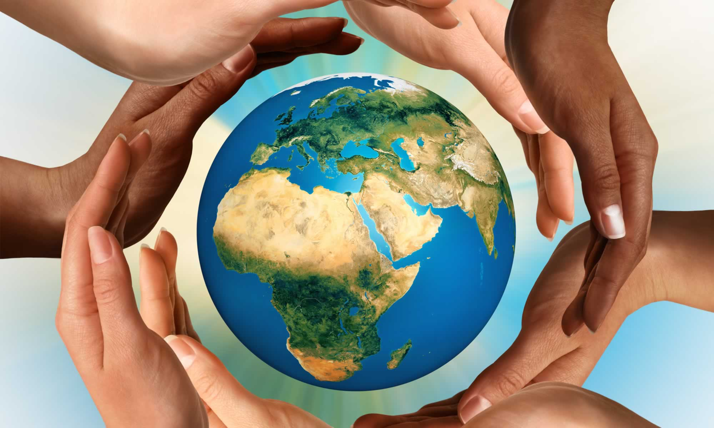

تعريف التضامن الاجتماعي
التضامن الاجتماعي هو التعاون والعمل بين أفراد المجتمع لتحقيق الأهداف الاجتماعية والتكافل الاجتماعي، ويبنى ذلك على قواعد مشتركة دون أيّ تحيّز أو تمييز بين الأشخاص المشاركين والمتعاونين من ناحية الجنس أو العرق أو الأصل أو الفكر، بالإضافة إلى أن التضامن الاجتماعي سلوك إنساني حثّ عليه الإسلام، وركيزة أساسية في المجتمع البشري تدفع الناس لمساعدة بعضهم البعض بما يحقق الصالح العام والفوائد لجميع أفراد المجتمع.

اهميه التضامن الاجتماعى
تحقيق التكافل الاجتماعي: التكافل الاجتماعي هو الهدف من التضامن، فالتضامن هو الفعل أو التنظيم الذي يلجأ إليه أفراد المجتمع لتحقيق التكافل الذي يساهم في سد الفجوات بين طبقات المجتمع والوصول إلى التماسك الاجتماعي.
تحقيق العدالة الاجتماعية: يعتبر التضامن أهم وسيلة لصون كرامة الإنسان وحفظ حقوقه بأكملها كما أنها تهدف إلى تحقيق المساواة بين الجميع وإلغاء التمييز البشري و الظلم الاجتماعي وتوحيد طبقات المجتمع وبالتالي تحقيق العدالة الاجتماعية.
الحد من تفشّي المظاهر الاجتماعية السلبية: يعتمد مبدأ التضامن على الحد والتخفيف من انتشار بعض المظاهر ذات التأثير والنتائج السلبية على الإنسان مثل الجوع والفقر والبطالة والأمراض، وذلك بإقامة بعض الجمعيات التعاونية والمشافي ومساعدة القويّ للضعيف والغني للفقير.
تعزيز التواصل الاجتماعي: يعد مبدأ التضامن إنسانياً إذ أنّه يعزز الشعور بالتعاون والاتحاد الاجتماعي بعيداً عن التفاوت والاختلاف بين الأفراد كما أنه يعتبر مشروع ناجح كونه عمل جماعي يقوم بتقديم المساعدات ويوحد الشعور بالوحدة العاطفية تجاه الآخرين، وبذلك يحقق تواصل جيّد بينهم بمشاركتهم مشاعر الحزن والفرح.
توفير الجهد والوقت في العمل: إن العمل التعاوني الجماعي قاعدة هامّة جداً في التضامن ونظراً لأهمية ذلك فهو يقلل الزمن اللازم لإنجاز عمل ما، وبالإضافة إلى ذلك، فإن لكل فرد دور وظيفي يقوم به ويساهم ذلك في توفير الجهد المبذول في العمل.
زيادة التنمية الإنتاجية: إن للتضامن في المجتمع دور أساسي في الوصول إلى الأهداف الاقتصادية التي تسعى إلى تحقيق التنمية الإنتاجية وزيادة الأرباح في المؤسسات والشركات، وبالتالي زيادة الدخل الخاصّ بالأفراد ورفع مستوى الاقتصاد في المجتمع.
اهم مظاهر التضامن الاجتماعى
يلعب التضامن الاجتماعي دور الحلقة الأهم في بناء الحضارات على أسس تشاركية إذ يهتّم بتكوين الوحدة واللحمة الاجتماعية، بمعنى أن كل الناس للفرد الواحد، وقد كان له أهميّة خاصّة بكل مجتمع ويتجسد ذلك في عدة مظاهر، أهمّها: [3]
تقديم المساعدة للآخرين: ويكون ذلك في مساندة الإنسان لأخيه الإنسان وتقديم العون له كالفقير والمحتاج أو ذوي الاحتياجات الخاصّة، وهذا يساهم في انتشار المساعدات والحثّ عليها لما لها من نتائج ذهبيّة في نفوس وحياة الآخرين.
المشاركة الاجتماعية أو تشكيل فريق: يحمل المتطوع رسالة لغيره تتضمن أهداف التضامن ونتائجه ويكون قدوة له مما يحفّز الآخرين على التشارك والتعاضد لبناء مجتمع متقدم خالٍ من المشاكل، ويكون ذلك بتشكيل فرق أو جماعات ووضع أهداف مشتركة وتحقيقها مثل المساعدة في البناء أو زراعة الأشجار.
الدعم للقضايا الإنسانية: ومن أهم مظاهر التضامن في المجتمع هو الوقوف إلى جانب المظلومين أو الأشخاص المعرّضين للاضطهاد وخاصّةً الأطفال ومساعدتهم في التخلص من العنف الأسري أو التنمّر الاجتماعي وكذلك إنصاف المرأة من خلال الدعم الذي تقدمّه جمعيّات حقوق المرأة المنتشرة في كافة المجتمعات.
تقديم الدعم للقضايا الوطنية: ويكون ذلك من خلال دعم المجتمع بالشكل المادي أو المعنوي للقضايا الكبيرة التي تخصّ فئات كبيرة من المجتمع أو قد تكون مجتمع بأكمله مثل قضيّة الأسرى في سجن المحتلّين أو القضاء على ظاهرة التشّرد أو التسوّل.
بناء الثقة بين الأفراد: يولّد التعاون بين الأشخاص أمور إيجابية على رأسها بناء الثقة بينهم وهذا يحسّن من المستوى الثقافي والإنساني في المجتمع ويبني مجتمع سليم فكرياً.
تحقيق التقدم الاجتماعي: يهدف التضامن بين الأفراد إلى تحسين المجتمع وتوحيده مما يساهم في تقدّمه ورفع مستواه بين المجتمعات الأخرى من جميع النواحي.

انواع التضامن فى المجتمع
لقد اختلفت صيغ التضامن ومظاهره في مجتمع ما عن غيره من المجتمعات الأخرى كما أنه لم يتجسّد في نوع محدد بل شمل التضامن عدّة أشكال وأنواع بحيث يرفع المستوى الاجتماعي والاقتصادي والثقافي للفرد وغيره ويحقق التقدم الاجتماعي للجميع، ومن أنواعه نذكر: [4]
التضامن الاقتصادي: تسعى المجتمعات إلى تحقيق الاكتفاء الذاتي وتحسين الأوضاع الاقتصادية لأفرادها قدر الإمكان وذلك من خلال محاربة الفقر والبطالة ومن خلال التكاتف الاجتماعي ومساعدة الغير وتقديم العون، وهذا بدوره يحسّن من التنمية الاقتصادية التي تزيد دخل كل فرد من أفراد المجتمع.
التضامن السياسي: يتظاهر التضامن من الناحية السياسية في تجنّب ما قد يتعرّض له مجتمع عن غيره من عدوان سياسي أو هجوم عدواني من قبل جماعات محددة وأن الهدف من التعاون هنا أنه قوّة ضد أيّ عدو خارجي.
التضامن النفسي: يهدف التعاون هنا إلى دعم الحالة النفسيّة للآخرين، كما أن التعاضد بين الأفراد يحسّن من الحالة العاطفية أو النفسية لديهم من خلال تجنّب الأنانية أو حب الذات والسعي إلى الإيثار (حب الخير للآخرين) بالإضافة إلى تجنّب الوحدة والانعزال والانخراط في بيئة المجتمع.
التضامن المادي: يعرف التضامن المادي أنّه ذا فائدة عظيمة تعود بالخير والراحة على الأشخاص ومن أشكال التضامن المادي دعم حملات التبرع بكافة الأشكال وتقديم المساعدة المالية للفقراء ومنح العائلات بعض المساعدات التموينية لإمكانية العيش، بالإضافة إلى ذلك، إيجاد بعض المساكن للمشّردين.
التضامن المعنوي: ويقصد بالتضامن المعنوي دعم الشعور العاطفي للآخر ومشاركته به، بمعنى أن يقف الأشخاص بجانب بعضهم البعض عند حدوث أي طارئ أو عارض صحي أو حادث مؤلم، وكمثال على التضامن المعنوي نذكر التشارك في عمل تطوعي ما، زيارة المريض وتقديم الدعم النفسي له وأيضاً مواساة عائلة ما بفقيدها.
اهداف التضامن الاجتماعى
يعدّ التضامن الاجتماعي من الأسس الضرورية في عملية التنمية البشرية وهدف أساسي للرقي الاجتماعي، وقد كان التضامن عموداً من أعمدة بناء الحضارات والمجتمع ولا زال حتى الآن إذ يهدف إلى:
الرعاية الاجتماعية: من أهم أهداف التضامن الاجتماعي رعاية الأفراد وتقديم العون وخدمات الرعاية الاجتماعية والاهتمام بهم، من حيث تقديم المساعدات المادية والمعنوية للأشخاص المحتاجين والفقراء والمرضى كما رعاية الكبار في السنّ.
التنمية الاجتماعية: يشيّد التعاون بين الأفراد للمجتمع بناء حضاري يتميّز بأسسه القوية المعتمدة على أفراده المتعاونين وهذا يرفع مستواه وأهميّته وينمّي التعليم ويعزز الأخلاق، كما يرفع من قدرات ومهارات العاملين في المجتمع.
الحماية الاجتماعية: تدعم فكرة التضامن الاجتماعي الفرد وتحميه من كافّة أنواع التعذيب أو الاضطهاد أو العدوان كما في حماية الأطفال الأيتام والمشردين والأسر الفقيرة والحماية من التفكك الأسري، ومن المظاهر أيضاً تقديم الحماية التأمينية كجزء من الحماية الاجتماعية.
تحقيق التعاون والتكافل الاجتماعي: يسهّل التضامن الاجتماعي تواصل الأفراد بين بعضهم البعض كما ويبني جمعيات وفرق تشاركية تهدف إلى حماية ورعاية الإنسان وحفظ حقوقه وهذا يدعم الأمان الاجتماعي ويشيع التعاون بين أفراد المجتمع ليصبحوا يد واحدة لا تتفرق كما يحقق التكافل الاجتماعي.
المساواة الاجتماعية: يبدأ التعاون والتضامن بفكرة موّحدة وهي تحقيق المساواة الاجتماعية حيث لا يبقى هناك تفاوت أو فروقات بين الطبقات الاجتماعية ويحقق مبدأ العدالة بين الأشخاص ويمنع الظلم ويقضي على الفقر والجهل.
اليوم العالمى للتضامن الاجتماعى
نظراً لأهميّة التضامن في تحقيق السلام وصون الأمن الدولي في العالم فقد أعلنت الأمم المتحدة أن هناك يوم عالمي للتضامن الاجتماعي وأحيته في اليوم 20 من شهر كانون الأول سنوياً، محفّزةً بذلك تبنّي القضايا الاجتماعية الصغيرة والكبيرة ومعالجتها ورفع مستوى الوعي الاجتماعي، ويعتبر اليوم الدولي للتضامن أنه: للقضايا يوم لتذكير الدول في التزامها بالاتفاقات الحكومية والدولية التي عقدتها.
يوم للتشجيع والتحفيز على ابتكار طرق وسبل جديدة للقضاء على المظاهر الاجتماعية السلبية.
يوم لرفع راية الوحدة وتوحيد جميع الطبقات والأديان والحكومات في مجال التنوع الاجتماعي وإحياء العدالة الاجتماعية.
يوم لفهم الإنسان لأهميّة التضامن الاجتماعي وقدرته على رفع المستوى الاجتماعي.
يوم لتعزيز ثقافة وروح المشاركة وتحقيق أهداف التنمية الاجتماعية وضمان الكرامة للجميع.